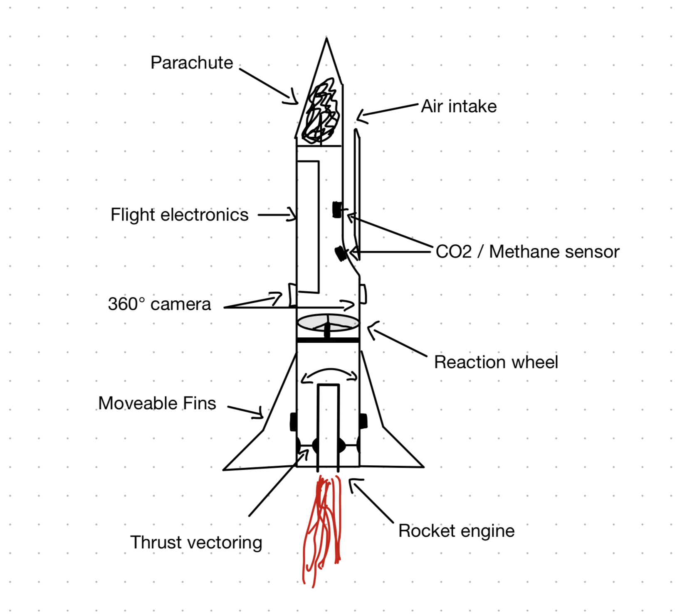

<br>
#### Week 1: Introduction
Today was the first day of our Digital Fabrication course. We did an introduction and overview of the course and later we learned
how to build our own website. We also brainstormed about our final project. I have two ideas for the final project:
1. Advanced rocket to measure methane and CO2 levels in the atmosphere
2. Automatic chessboard which uses AI as an opponent
1: This mid-scale rocket will use advanced technologies and chemistry. It will be used to measure the concentration of toxic gases in
our atmosphere at various altitudes to better understand climate change.
Additionally, it will feature movable fins for stability (maybe using piezoelectric effect), reaction wheels, thrust vectoring and two 360° cameras.
The footage of the cameras can be stitched together and stabilized.
Below is a sketch I made to illustrate how the rocket would look like.
<p></p>
2: My second idea is to build a chessboard against which you can play. It uses magnets attached to a x-y cartesian motion system below the board
to move pieces. It will use the Stockfish chess AI. The video below is a simplification showing how the mechanics work in general.
<video width="480" height="360" controls>
<source src="chessboard robot (v2~recovered) copy.mp4" type="video/mp4">
</video>